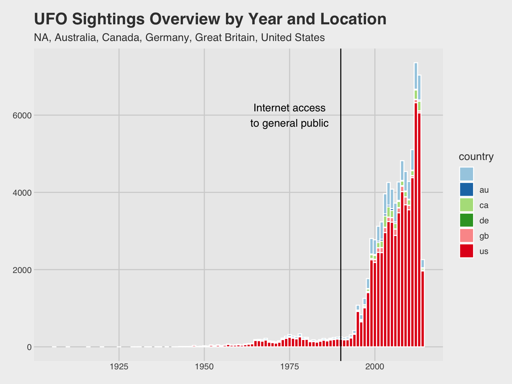

Slide 4: Unfiltered Data
Here’s a glimpse of our dataframe.
## Rows: 80,332
## Columns: 22
## $ Date_time <chr> "10/10/1949 20:30", "10/10/1949 21:00"…
## $ city <chr> "san marcos", "lackland afb", "chester…
## $ state.province <chr> "tx", "tx", "", "tx", "hi", "tn", "", …
## $ country <chr> "us", "", "gb", "us", "us", "us", "gb"…
## $ UFO_shape <chr> "cylinder", "light", "circle", "circle…
## $ length_of_encounter_seconds <chr> "2700", "7200", "20", "20", "900", "30…
## $ described_duration_of_encounter <chr> "45 minutes", "1-2 hrs", "20 seconds",…
## $ description <chr> "This event took place in early fall a…
## $ date_documented <chr> "4/27/2004", "12/16/2005", "1/21/2008"…
## $ latitude <dbl> 29.88306, 29.38421, 53.20000, 28.97833…
## $ longitude <dbl> -97.941111, -98.581082, -2.916667, -96…
## $ year <dbl> 1949, 1949, 1955, 1956, 1960, 1961, 19…
## $ month <dbl> 10, 10, 10, 10, 10, 10, 10, 10, 10, 10…
## $ day <dbl> 10, 10, 10, 10, 10, 10, 10, 10, 10, 10…
## $ hour <dbl> 20, 21, 17, 21, 20, 19, 21, 23, 20, 21…
## $ min <dbl> 30, 0, 0, 0, 0, 0, 0, 45, 0, 0, 0, 0, …
## $ month_name <chr> "October", "October", "October", "Octo…
## $ month_name_ordered <fct> October, October, October, October, Oc…
## $ DATE <chr> "10/10/1949", "10/10/1949", "10/10/195…
## $ DATE_2 <date> 1949-10-10, 1949-10-10, 1955-10-10, 1…
## $ weekday <fct> Mon, Mon, Mon, Wed, Mon, Tue, Sun, Sun…
## $ length_min <dbl> 45.0000000, 120.0000000, 0.3333333, 0.…
-New columns were created to alter strings to numeric values for ease
of use.
Slide 6: Overview of Data and
Where
df %>%
group_by(year,country) %>%
summarize(count=n()) %>%
ggplot(aes(x=year,y=count,fill=country)) +
geom_histogram(stat='identity',width=1,color='white',size=.25) +
scale_fill_brewer(palette='Paired') + geom_vline(xintercept=1990,color='black') +
annotate("text", x = 1975, y = 6000, label = "Internet access\nto general public",color='black') +
theme_fivethirtyeight() +
ggtitle('UFO Sightings Overview by Year and Location', 'NA, Australia, Canada, Germany, Great Britain, United States') +
theme(legend.position='right',legend.direction='vertical')
## `summarise()` has grouped output by 'year'. You can override using the
## `.groups` argument.
## Warning in geom_histogram(stat = "identity", width = 1, color = "white", :
## Ignoring unknown parameters: `binwidth`, `bins`, and `size`

Slide 7: Worldwide View
countries_map <- map_data("world")
world_map <- ggplot() +
geom_map(data = countries_map,
map = countries_map,aes(x = long, y = lat, map_id = region, group = group),
fill = "white", color = "black", size = 0.1)
## Warning: Using `size` aesthetic for lines was deprecated in ggplot2 3.4.0.
## ℹ Please use `linewidth` instead.
## This warning is displayed once per session.
## Call `lifecycle::last_lifecycle_warnings()` to see where this warning was
## generated.
## Warning in geom_map(data = countries_map, map = countries_map, aes(x = long, :
## Ignoring unknown aesthetics: x and y
world_map + geom_point(data=df,aes(x=longitude,y=latitude),alpha=.5,size=.25) + theme_fivethirtyeight() + ggtitle('Locations of UFO Sightings')
## Warning: Removed 1 row containing missing values or values outside the scale range
## (`geom_point()`).

slide 8: United States View
states_map <- map_data("state")
usMap <- ggplot() +
geom_map(data = states_map, map = states_map,aes(x = long, y = lat, map_id = region, group = group),fill = "white", color = "black", size = 0.1) +
theme_fivethirtyeight()
## Warning in geom_map(data = states_map, map = states_map, aes(x = long, y = lat,
## : Ignoring unknown aesthetics: x and y
usMap +
geom_point(data=filter(df,country=='us' & state.province!='hi' & state.province!='ak' & state.province!='pr'),aes(x=longitude,y=latitude),alpha=.75,size=.5) +
ggtitle('Location of UFO Sightings in the US')

ggplot(df, aes(x=reorder(state.province, state.province, FUN=length), fill=state.province)) +
stat_count() +
theme_bw() + theme(axis.text.x = element_text(angle=50, size=8, hjust=1)) +
xlab("State") + ylab("Number of appearances") + ggtitle("UFO sightings by states in the USA");

Slide 10: Additional Graphs
df %>% group_by(hour,month_name_ordered) %>%
summarize(count=n()) %>%
ggplot(aes(x=factor(hour),y=count,color=month_name_ordered,group=month_name_ordered)) +
geom_line() +
theme_fivethirtyeight() +
scale_color_manual(name="",values=brewer.pal(12,'Paired')) +
geom_point(color='black',size=.5,alpha=1) +
ggtitle('UFO Observations During the Day','Time Based on 24-hour Cycle')
## `summarise()` has grouped output by 'hour'. You can override using the
## `.groups` argument.

df %>% group_by(weekday,month_name_ordered) %>%
summarize(count=n()) %>%
ggplot(aes(x=weekday,y=count,color=month_name_ordered,group=month_name_ordered)) +
geom_line() +
theme_fivethirtyeight() +
scale_color_brewer(name="",palette='Paired') +
geom_point(color='black',size=.5,alpha=1) +
ggtitle('UFO Observations During the Week')
## `summarise()` has grouped output by 'weekday'. You can override using the
## `.groups` argument.

ggplot(df, aes(x=reorder(UFO_shape, UFO_shape, FUN=length), fill=UFO_shape)) +
geom_bar(show.legend=F) +
coord_flip() +
theme_bw() + xlab("UFO Shape") + ylab("Number of Appearances") + ggtitle("UFO Shapes Seen Worldwide");